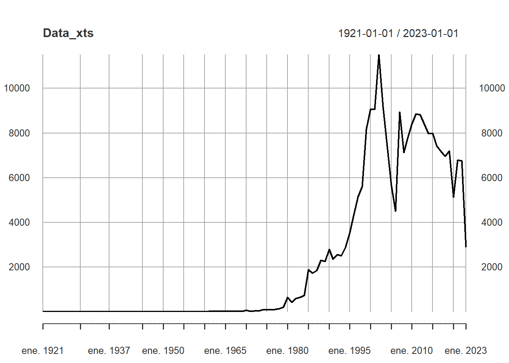
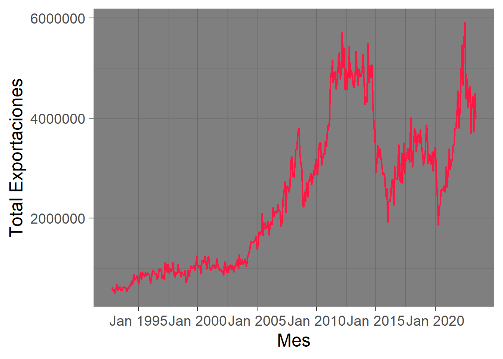

Propuestas de series de tiempo
Traer datos
Primero limpiaremos un poco la base de datos y la dejaremos como la necesitamos.
Anual
como el \(%\) de datos faltantes es menor al 1% de los datos disponibles los eliminaremos para mayor facilidad de trabajo. Además pasrameos la variable ‘Fecha de la desaparición’ a formato character para luego pasarla a fecha. Por ultimo haremos un procesamiento de los datos para un conteo
Ahora intentaremos usar xts para poder trabajar con un objeto que sea un serie de tiempo en R
Número de desaparecidos reportados al año en Colombia
Mensual
Número de desaparecidos reportados por mes en Colombia
Tasa de crecimiento mensual con respecto al periodo anterior del IPC de servicios en Colombia
Exportaciones mensuales desde Colombia en miles de dólares
ggplot(Exportaciones) + geom_line(aes(x = Mes, y = Total), color = "#FF1744", lwd = 0.8) +
theme_minimal(18) + ylab("Total Exportaciones")
Propuesta para las exportaciones con otra visualización
tibble [378 × 4] (S3: tbl_df/tbl/data.frame)
$ Mes : 'yearmon' num [1:378] Jan 1992 Feb 1992 Mar 1992 Apr 1992 ...
$ Total : num [1:378] 531771 573004 552307 531825 628717 ...
$ Tradicionales : num [1:378] 281755 290901 247223 293150 302261 ...
$ Notradicionales: num [1:378] 250016 282103 305084 238675 326457 ...# cambiar la ventana de datos
Exportaciones <- Exportaciones[97:378,]
Data_xts <- xts(Exportaciones$Total, order.by = Exportaciones$Mes)
#
head(Data_xts) [,1]
Jan 2000 1011676
Feb 2000 1054098
Mar 2000 1053546
Apr 2000 886359
May 2000 1146258
Jun 2000 1153956 The Data_xts series is a xts object with 1 variable and 282 observations
Frequency: monthly
Start time: Jan 2000
End time: Jun 2023 [1] "xts" "zoo"[1] 12Monthly periodicity from Jan 2000 to Jun 2023 [1] "yearmon"Por Hora
Temperatura en la ciudad de miami durante un fenomeno tropical sucedido en puerto rico zona cercana a miami
Miraremos primero las temperaturas en la ciudad de miami durante un fenomeno tropical sucedido en puerto rico zona cercana a miami.
trabajo con los datos
Valor de cierre en bolsa del bitcoin entre un periodo en noviembre del 2021
Miraremos el valor de cierre en bolsa del bitcoin entre un periodo en noviembre del 2021.